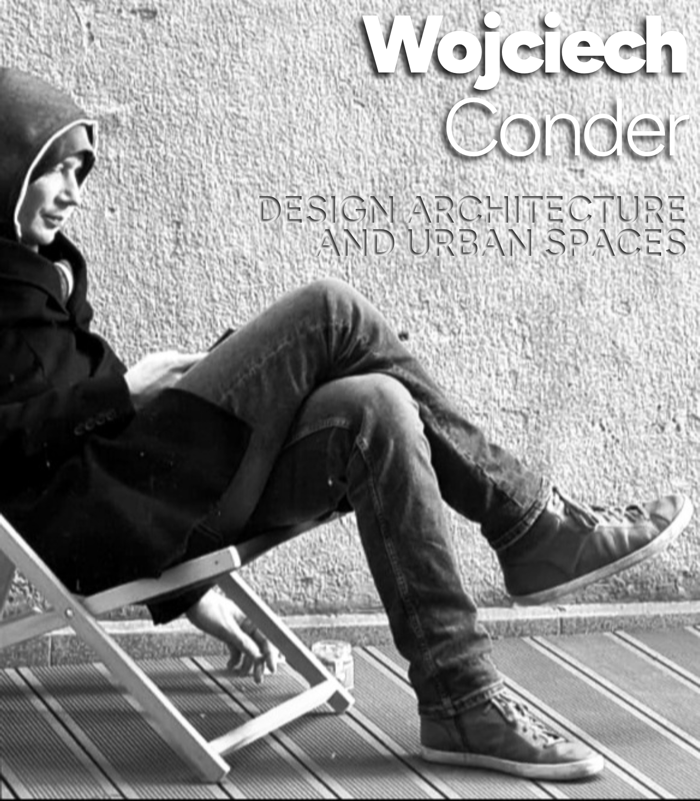
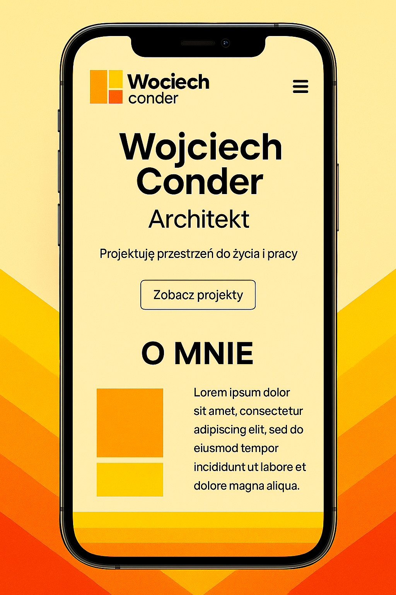

Wojciech Conder
DESIGN ARCHITECTURE
AND URBAN SPACES
AND URBAN SPACES
Architekt z dyplomem WAPW oraz uprawnieniami do projektowania bez ograniczeń, założyciel pracowni 22ARCHITEKCI (założonej w 2010 roku wraz z Aleksandrem Drzewieckim, Maciejem Kowalczykiem i Michałem Tatjewskim). Wcześniej partner w WXCA (2007–2010), praktykował m.in. w MCM Design Studio w Lozannie oraz w Szcześniak Denier Architects.
Projektuje budynki mieszkalne, biurowe, użyteczności publicznej, prowadząc proces od koncepcji aż po nadzór autorski
- Kontekst i prostotę formy
- Dbałość o detal oraz logiczne rozwiązania materiałowe i konstrukcyjne
- Interdyscyplinarny dialog z klientami, użytkownikami i specjalistami dla uzyskania jakości przy optymalnym budżecie
architekt | dyplom WAPW, OW SARP

Muzeum Pamięci Palmiry
– 2009
Projekt w ramach WXCA, zwycięski w przetargu. Realizacja muzeum z ekspozycją historyczną w lesie pod Warszawą.